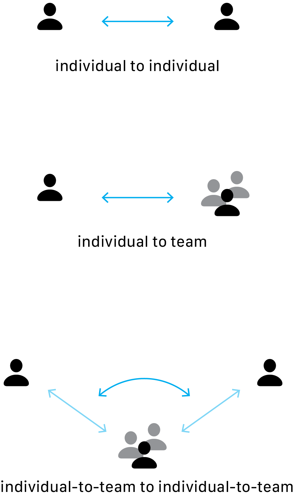

Data visualization for Gallup
Clifton Strengths assessment. Create hands-on prototypes for the Gallup executive team to test various methods of data visualization—to make test results intuitive and impactful for team building.
Started with a scrollytelling demo, NYT style.
Create narratives from test data, to convey insights in a meaningful and digestible way.
Next step was to make it real.
Allow the Gallup team to upload their own CSV files, and test out different visualizations themselves. Created several demos for different visualization styles:

The visualizations were designed to analyze compatibility at various levels.
